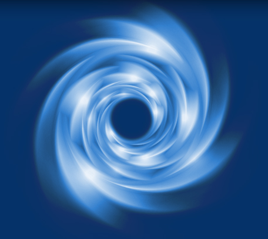

Self Hypnosis


About Reset Mindset
RESET MINDSET is based on the premise that:
- Emotions are a survival mechanism – they drive behavior. They are neither good nor bad, merely a reaction to a trigger.
- Strong emotions are an indicator that something needs your attention.
- Strong emotions are an indicator that something needs your attention.
- Several emotions can arise at once - focus on the predominant emotion and name it.
- Naming it is the first step to processing an emotion.
- Processed emotions will recede.
- nprocessed emotions accumulate and fester causing increased stress and potentially unwanted behavior.